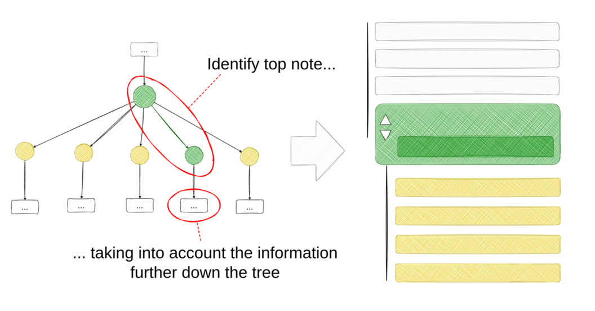
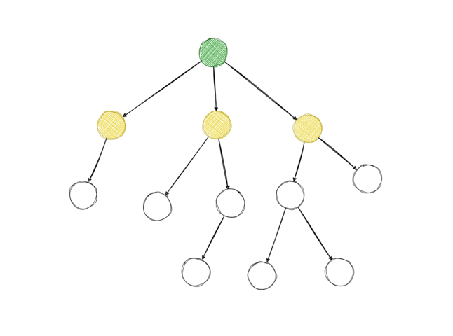

7 The Fully-Informed Upvote Probability

The core algorithm on the thread level is the algorithm that identifies the top replies. It quantifies how much information each reply adds to the original post and determines the reply that adds the most information. A different way of putting it would be that we predict how a fully informed user would vote on any given post. We can then compare that informed upvote probability with the uninformed one to determine how convincing the reply is with regard to the original post.
We are considering two posts: a post \(A\) and direct reply \(B\). We observe the following events:
- \(u_A := \text{a vote on A is an upvote}\)
- \(u_B := \text{analogous}\)
- \(s_B := \text{the user was shown post B}\)
- \(\bar{s_B} := \text{the user was not shown post B}\)
- \(s_{B*} := \text{the user was shown the top note on B}\)
- \(\bar{s_{B*}} := \text{the user was not shown the top note on B}\)
What we are looking for is \(P(u_A | s_B, s_{B*})\), the probability of an upvote on \(A\) given that the user has seen \(B\) and the top note on \(B\) (fully-informed upvote probability). We define it as the weighted average of the upvote probability of \(A\) given that the user has seen the top note on \(B\) and the upvote probability of \(A\) given that the user has not seen the top note on \(B\):
\[ P(u_A | s_B, s_{B*}) = P(u_A | s_B) \cdot \text{support} + P(u_A | \bar{s_B})(1 - \text{support}) \]
The weights are given by the support of the top note on \(B\). Support is the ratio (expressed as a fraction) between the informed upvote probability of \(B\) given that the user has seen the top note on \(B\) and the informed upvote probability of \(B\) given that the user has not seen the top note on \(B\).
\[ \text{support} = \frac{P(u_B | s_{B*})}{P(u_B | s_{B*}) + P(u_B | \bar{s_{B*}})} \]
As we condition on the user being shown the top note of post \(B\) (\(s_B*\)), the informed upvote probability of \(A\) needs to take all information below it in the tree into account. To know the informed probability of \(A\), we need to know the informed probabilities of all the replies to \(A\) as well, and for each of those, we need the informed probabilities of their replies too, and so on. To calculate all of those probabilities, the algorithm recurses through the discussion tree, starting at the top note. For leaf nodes, the informed upvote probability is equal to the uninformed upvote probability because leaf nodes have no replies which means reaching a leaf node is the stopping criterion for the recursion.

The outcome of the algorithm are all the informed probabilities of the replies in a given discussion tree. We can compare them with the uninformed probabilities to find out which replies are most likely to change users’ votes.